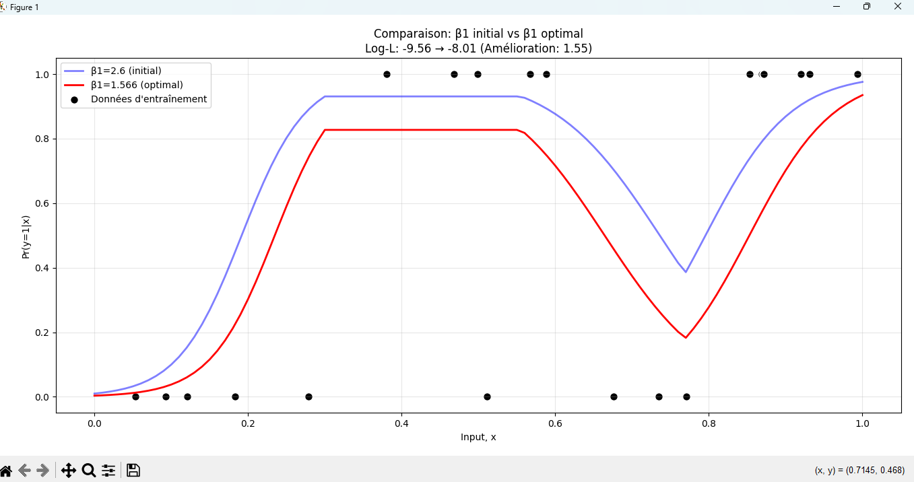

Préparation
Nettoyer et organiser les données utilisées pour l'apprentissage.
Machine Learning
Étude et mise en œuvre d'un problème de classification binaire à partir de données d'apprentissage.

Le projet consiste à analyser un ensemble de données, préparer les variables pertinentes et construire une approche permettant de distinguer deux catégories.
Pipeline
Nettoyer et organiser les données utilisées pour l'apprentissage.
Étudier les caractéristiques et les relations présentes dans les données.
Construire un modèle capable d'apprendre à distinguer les deux classes.
Mesurer les performances du modèle sur des données appropriées.
Apprentissages
Préparer les données avant leur utilisation dans un modèle d'apprentissage.
Comprendre le fonctionnement d'un problème de classification supervisée.
Analyser les résultats et identifier les limites d'un modèle de classification.
Explorer
Découvrez les autres projets de développement et d'intelligence artificielle.